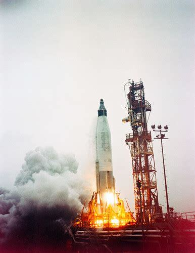
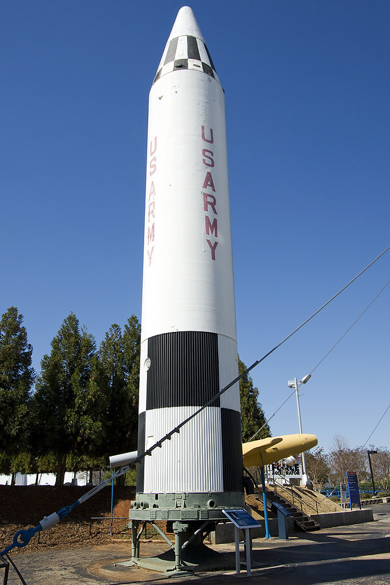
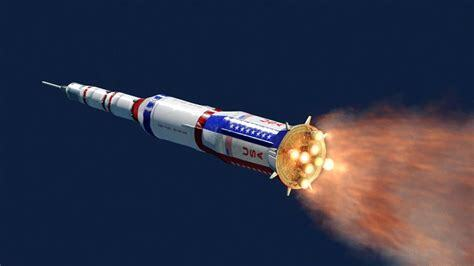
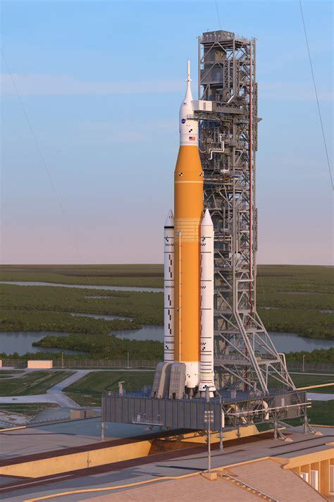
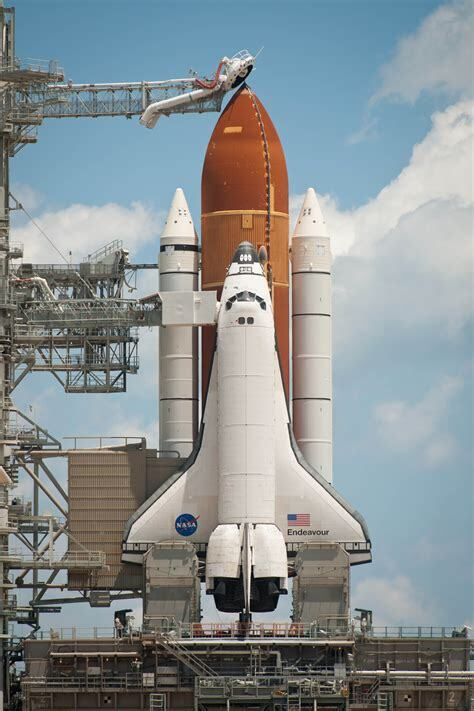

Qui puoi trovare quelli che secondo me sono i più famosi razzi e le loro specifiche.
Atlas I:
Fu un razzo statunitense utilizzato per portare nello spazio satelliti negli anni 90, è formato da due stadi: il primo costituito da tre motori e un razzo H e il secondo da un razzo Centaur. Veniva usato il propellente liquido, era alto 43,90 metri e poteva portare in orbita bassa un carico da 3600 Kg. Effettuarono 11 lanci di cui 8 andati bene, venne ritirato nel 1997 cioè lo stesso anno in cui fu messo in operazione.
Atlas II:
Fu un razzo con uno stadio e mezzo con tre motori, i serbatoi del carburante e la struttura fu uguale identica a quella dell’Atlas. Fu progettato per portare carichi utili nella bassa atmosfera terrestre, fu in servizio dal 1991 fino al 2007 portando al termine 63 lanci contando anche quelli dell’Atlas IIA e IIAS.
.jpg)
Atlas III:
Fu un razzo con 2 stadi di cui il primo con un RD-180, motore russo caratterizzato dalla doppia camera di combustione e il secondo con un Centaur. Fu in servizio dal 2000 fino al 2005 effettuando 6 lanci senza nessun incidente. Fu usato per portare carichi utili nella bassa atmosfera terrestre.

Atlas V:
E’ composto da due stadi di cui il primo con un RD-180 a propellente liquido e il secondo con un Centaur. Fu messo in utilizzo dal 2002 e viene ancora utilizzato. Effettuò 78 lanci di cui solo 1 andato male in cui il Centaur si spense all’improvviso.
.jpg)
Athena:
Fu un lanciatore spaziale costruito dalla lockheed Martin nel 1993, durante la sua costruzione si cambiò tante volte il nome e non è recuperabile. Ne furono realizzate due versioni, la prima aveva due stadi con motori Castor-120. La seconda aveva 3 stadi e dei motori orbus 21d. Venne progettata anche una terza versione ma non venne mai costruita. Fece ben 7 missioni e viene utilizzato ancora oggi.
Delta I:
Entrò in servizio nel 1962 ma venne realizzato a partire del 1960 con un missile balistico. erano razzi alti 40m e le versioni venivano indicate con una lettera dell’alfabeto o con una lettera a quattro cifre. Rimase in servizio fino al 1989.
Delta II:
Venne messo in utilizzo a partire dal 1989 per sostituire il delta I. Questo fu uno dei razzi più affidabili della nasa. Ne vennero realizzate diverse versioni e aveva un motore 7925-Heavy o 7925, rimase in servizio fino al 2018. Aveva 3 stadi di cui il primo con un RS-27, il secondo con un AJ10-118K e il terzo con un ATK-Thiokol perfetto per portare nella giusta traiettoria verso marte, ha fatto ben 7 lanci tutti correlati a marte.
Delta III:
Prodotto nel 1998 il razzo era uguale a un Delta II ma aveva il doppio della capacità. Fece tre lanci di cui i primi due falliti, il terzo fu eseguito con successo ma venne comunque ritirato.
Delta IV:
Fu un razzo vettore fatto dalla Boeing con un 2 stadi di cui al primo degli RS-68 dai lati che ne facilitavano il lancio, lo stesso motore venne poi usato anche sullo space shuttle. Lo stadio superiore era uguale a quello del Delta III con l’unica differenza di serbatoi ridotti di circa 4m. Aveva tuttavia anche un motore diverso, l’RL-10B2. Fece 4 lanci tutti andati bene, i test andarono male.
PGM-19 Jupiter:
Era un razzo a due stadi con dei motori a testata termonucreare prodotto dalla crhysler (casa automobilistica americana). è la versione migliorata del Chrysler SSM-A-14 Redstone, era meno largo, aveva un diametro maggiore e pesava l’80% in più rispetto al precedente. Da questo razzo usato a scopi militari usato in italia, turchia e stati uniti ne derivarono il Juno I e II usati per il lancio di satelliti artificiali. Su questo razzo, oltre a scopi militari fu usato anche per portare animali nello spazio. Fu in servizio dal 1958 fino al 1965.
Little Joe:
Fu un lanciatore americano degli stati uniti a combustibile solido usato dal 1959 fino al 1960. Questo razzo veniva usato per testare il sistema di fuga dal lancio e lo scudo termico per le capsule. aveva degli MGM-29 Sergeant e dei motori di spinta secondari che si accendevano a sequenze. Ci fu anche il due che venne usato dal 1963 fino al 1966 per gli stessi scopi.

Minotaur I:
é un veicolo di lancio americano sviluppato per il programma Orbital/Suborbital dell’areonautica statunitense come veicolo di lancio spaziale a quattro stadi a bassi costi grazie ai motori ICBM Minuteman II. Minotaur effettuò il suo volo di inaugurazione nel gennaio del 2000 portando dei piccoli satelliti militari e universitari. Questo razzo può portare fino a 580 kg di carico su un orbita di 185 kg. A oggi ha completato ben 12 missioni portando in orbita ben 62 satelliti.

Minotaur II
Fu un veicolo di lancio orbitale americano completamente solido, costituito da ben tre tre stadi a cui i primi due con dei missili Minuteman dismessi, il razzo del terzo stadio dipende dalla configurazione del razzo, sulla configurazione base viene usato un Minuteman II . La configurazione base può spingere un carico utile di 400 kg a 4000 km verso il basso, la configurazione pesante invece ha un carico utile di 1400 kg su una traiettoria di 8000 km. Furono fatti in totale 11 razzi, nove con la configurazione base e 3 con quella avanzata, tutti i razzi vennero lanciati con successo tranne l’ultimo.

Minotaur III
è un lanciatore spaziale americano derivato dal missile balistico intercontinentale. é costituito da 4 stadi costituti da SR-118, SR-119 e SR-120, il quarto stadio con un super-HAPS derivato dallo stadio HAPS, usa razzi Pegasus e Minotaur I. è in grado di lanciare un carico utile di 3000 kg a 5000 km .

Minotaur IV
è un sistema di lancio attivo non riutilizzabile gestito come gli altri da Northrop Grumman Innovation System. Effettuò il suo primo volo il 22 aprile del 2010 trasportando l’HTV-2a. Il suo primo lancio orbitale avvenne il 26 settembre del 2010 con un SBSS. E’ composto da ben 4 stadi ed è in grado di posizionare ben 1735 kg in un orbita terrestre bassa, i primi tre stati sono quelli del minotaur III con il quarto stadio composto da un Orion 38, nella variazione Minotaur IV+ viene usato uno Star-48V. effettuò ben 7 lanci tutti conclusi senza incidenti. Si ricorda il lancio STP-S26 che schierò ben 8 carichi utili.

Minotaur V
è un sistema di lancio non recuperabile derivato dal Minotaur IV a sua volta derivato da un missile balistico intercontinentale . è composto da ben 5 stadi che possono portare un carico utile di 630 kg . Il quinto stadio è l’unico diverso che è formato da uno Star-37 del Minotaur IV. Effettuò soltanto un lancio eseguito con successo il 7 settembre del 2013.

Nova
erano dei razzi vettori proposti dalla nasa per le missioni lunari in alternativa al saturn V e anche per missioni con destinazioni su marte. Intanto che apollo procedeva furono iniziati i progetti per il nova che ha l’obiettivo di raggiungere 500 tonnellate di carico utile. Questo progetto venne affidato alla General Dynamics, poco dopo, nel 1964 il progetto nova fu sospeso.
Saturn I
Fu il primo razzo statunitense che pensarono per lanciare un oggetto nell’orbita della terra. Ne furono lanciati dieci per poi essere rimpiazzati dalla loro versione migliorata Saturn IB di cui ne volarono 9 (nonostante ne furono costruiti 12). Il primo lancio venne fatto nel 1963 per poi essere messo fuori utilizzo nel 1975. Il Saturn I poteva portare un carico utile di 9.000 kg in un orbita terrestre bassa.

Saturn V
Il saturn V era un razzo con più di uno stadio non riutilizzabile, il suo combustibile principale era il propellente liquido. Come gli altri Saturn venne utilizzato per missioni apollo e skylab. Tra il 1967 e il 1973 ne vennero lanciati 13 tutti portati a termine con successo. Questo razzo portò 12 astronauti sulla luna usando il modulo di comando e servizio Apollo (apollo CSM) in quel tipo di missioni. Aveva un carico utile di 140000 kg verso un'orbita terrestre bassa.

SLS
è un sistema di lancio derivato dallo Space Shuttle non riutilizzabile ancora in progettazione. Verrà utilizzato per esplorazioni spaziali future ma soprattutto per ritornare su luna con il programma Artemis e forse anche per andare su marte. Questo razzo nacque dal progetto cancellato da Barack Obama chiamato Constellation con il compito di terminare la ISS e di tornare sulla luna. La nasa lavorò a questo progetto dal 2005 fino al 2009. All’incirca potrà portare verso Saturno un carico utile di 6000 kg con il secondo stadio. Il primo lancio venne eseguito circa un anno fa finendo con successo.
Space Shuttle
Era un sistema di lancio spaziale riutilizzabile fatto dalla nasa per missioni in orbita terrestre. Il componente che portava gli astronauti si chiamava Orbiter Vehicle formato da tre motori che usano combustibile del serbatoio esterno. Per le manovre venivano utilizzati due motori più piccoli. Oltre a questo c’era il serbatoio esterno contenente ossigeno liquido nella parte superiore e idrogeno nella parte inferiore. Questo pezzo si stacca dopo 8 minuti circa per poi esplodere in atmosfera. Infine era formato da due razzi riutilizzabili a propellente solido chiamati Solid Rocket Booster che si staccavano circa 2 minuti dopo il lancio per poi cadere nell’oceano con dei paracadute. Erano previste anche altre attrezzature mai realizzate. Poteva portare un carico utile in bassa orbita terrestre di 27500 kg. Fu lanciato in orbita per la prima volta nel 1981 per terminare la sua ultima missione nel 2011, questo lanciatore eseguì ben 135 lanci di cui solo due fallimenti. Venne utilizzato per portare sonde, componenti della ISS, l’hubble telescope e molto altro.
Titan
era un missile balistico intercontinentale nucleare fatto dalla NASA in caso di fallimento dell’atlas. Venne utilizzato come razzo vettore anche di più dell’atlas nonostante sia stato sostituito dopo poco tempo dal Titan II. Questo razzo vettore fece 70 lanci totali di cui però 17 fallimenti. Si utilizzava per lanciare satelliti e per eseguire missioni spaziali.

Titan II
Venne utilizzato dalla U.S Air Force negli anni 60 e 80. Il loro utilizzo principale era di essere missili balistici intercontinentali ma nonostante ciò la NASA decise di utilizzare questi razzi come lanciatori spaziali e anche per lanciare le capsule del programma gemini che comprendeva a bordo astronauti. Questo razzo a due stati poteva portare 1900 kg di carico utile in un'orbita polare bassa(sopra i due poli). Da questo Titan derivano anche i TItan 23B, 24B, 33B e 34B Usati per lanciare satelliti spia in orbite polari, avevano un carico utile di circa 3000 kg.

Titan III
questo razzo simile ad un Titan II poteva migliorato con dei razzi opzionali a propellente solido. Venne utilizzato dalla U.S Air Force per portare satelliti spia e altri carichi militari. Venne utilizzato anche dalla NASA per lanciare delle sonde spaziali tra le quali quelle del programma voyager.

Titan IV
E’ un razzo utilizzato come il Titan III per incarichi militari ma anche per lanciare sonde tra le quali la famosa sonda cassini lanciata verso saturno. Questo razzo è semplicemente un Titan III più grande e cib razzi a combustibile solido obbligatori. Questo oltre ad essere il razzo più potente senza equipaggio fatto negli stati uniti fu anche l’ultimo dato che, in quanto non del tutto funzionante arrivò al suo termine. Per rimpiazzare questi si svilupparono però i razzi Atlas.